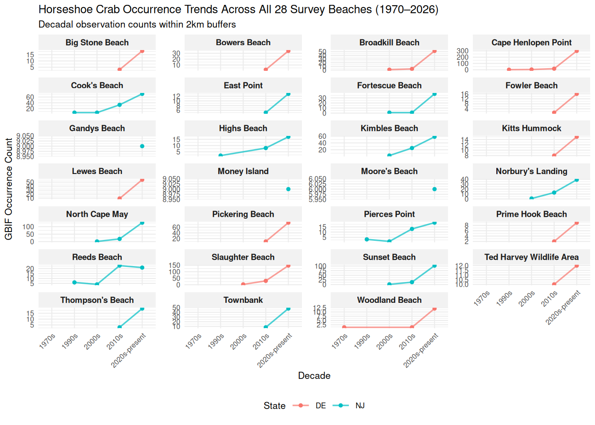

library(tidyverse)
library(leaflet)
library(kableExtra)
library(htmlwidgets)
library(widgetframe)
library(rgbif)
library(ggplot2)
library(sf)
knitr::opts_chunk$set(widgetframe_widgets_dir = 'widgets' )
knitr::opts_chunk$set(cache=TRUE) # cache the results for quick compilingModeling Horseshoe Crab Nesting Population Trends in Delaware Bay
Introduction
How has the overexploitation of the American Horseshoe Crab (Limulus polyphemus) for commercial and biomedical harvesting impacted their Delaware Bay spawning populations? One of the oldest extant species, horseshoe crabs play a vital role in bay shore ecosystems. The Red Knot, among many other migratory birds, relies primarily on horseshoe crab eggs to complete its journey North. Specifically, this shorebird makes its final “pit stop” in Delaware Bay, the largest aggregation of horseshoe crab nesting sites. Since overharvesting of crabs has led to severe population declines in the past century, I am interested in determining how recent legislation passed regarding harvesting restrictions has affected spawning populations, particularly in the Delaware Bay shore region. By modeling historical citizen science occurrence data alongside annual spawning survey data, I intend to visualize fluctuations in horseshoe crab nesting sites. While this study will not prove correlation, it may provide insight as to how crab populations have changed since the establishment of anti-over-harvesting legislature.
Materials and methods
The study area was first defined by drawing 28 survey beach coordinates from the Delaware Bay Horseshoe Crab Annual Spawning Survey. Using the rgbif package, citizen scientist observation data of L. polyphemus was curated for 1970 (pre-legislation) to 2026 (post-legislation). After creating buffer rings around the survey beaches, occurrence data was filtered and summarized by decade. The horseshoe crab spawning survey csv file (located in the /data folder) will be used to compare citizen science data to official survey records and further visualize population fluctuations. Specifically, I intend to use the Baywide Male & Female Spawning Activity and % Female Spawning in May columns to model changes in nesting sites.
Load required packages
Download and clean all required data
hsc_survey <- read_csv("data/Horseshoe_Crab_Spawning_Survey_20261107.csv") # Read csv from data folderRows: 21 Columns: 34
── Column specification ────────────────────────────────────────────────────────
Delimiter: ","
dbl (34): Year, DE % Female Spawning in May, NJ % Female Spawning in May, Av...
ℹ Use `spec()` to retrieve the full column specification for this data.
ℹ Specify the column types or set `show_col_types = FALSE` to quiet this message.#'
glimpse(hsc_survey) # Important columns to note: Baywide Male & Female Spawning Activity, % Female Spawning in MayRows: 21
Columns: 34
$ Year <dbl> 1999, 2000, 2001, 2002, 200…
$ `DE % Female Spawning in May` <dbl> 77, 54, 47, 73, 47, 76, 18,…
$ `NJ % Female Spawning in May` <dbl> 93, 64, 76, 78, 56, 85, 30,…
$ `Avg. Daily Water Temp. in May (°C)` <dbl> 16.2, 15.6, 16.0, 16.7, 13.…
$ `Baywide Spawning Activity Lunar Period 1` <dbl> 0.86, 0.92, 0.77, 0.92, 0.0…
$ `Baywide Spawning ActivityLunar Period 2` <dbl> 1.58, 1.23, 0.96, 1.81, 0.1…
$ `Baywide Spawning ActivityLunar Period 3` <dbl> 0.32, 0.91, 0.76, 0.71, 1.5…
$ `Baywide Spawning ActivityLunar Period 4` <dbl> 0.15, 0.62, 0.42, 0.14, 1.1…
$ `Number of Males per Female` <dbl> 3.2, 3.2, 3.1, 3.1, 3.6, 3.…
$ `Total Beaches Surveyed` <dbl> 17, 22, 22, 23, 23, 24, 23,…
$ `Baywide Male Spawning Activity` <dbl> 2.50, 2.96, 2.37, 2.86, 2.8…
$ `Baywide Male 90% CI Lower Limit` <dbl> 1.86, 2.31, 1.91, 2.45, 2.5…
$ `Baywide Male 90% CI Upper Limit` <dbl> 3.37, 3.80, 2.95, 3.34, 3.3…
$ `Baywide Male SD` <dbl> 0.45, 0.45, 0.31, 0.27, 0.2…
$ `Baywide Male CV` <dbl> 18, 15, 13, 9, 9, 8, 9, 8, …
$ `Baywide Female Spawning Activity` <dbl> 0.77, 0.91, 0.75, 0.91, 0.8…
$ `Baywide Female 90% CI Lower Limit` <dbl> 0.62, 0.74, 0.63, 0.08, 0.7…
$ `Baywide Female 90% CI Upper Limit` <dbl> 0.97, 1.13, 0.90, 1.04, 0.9…
$ `Baywide Female SD` <dbl> 0.10, 0.12, 0.08, 0.07, 0.0…
$ `Baywide Female CV` <dbl> 13, 13, 10, 8, 8, 7, 9, 7, …
$ `DE Beaches Surveyed` <dbl> 8, 11, 12, 13, 13, 13, 13, …
$ `DE Male Spawning Activity` <dbl> 3.78, 3.93, 2.76, 2.74, 2.9…
$ `DE Male 90% CI Lower Limit` <dbl> 2.65, 2.76, 2.02, 2.13, 2.2…
$ `DE Male 90% CI Upper Limit` <dbl> 5.37, 5.60, 3.76, 3.52, 3.7…
$ `DE Female Spawning Activity` <dbl> 0.93, 1.02, 0.82, 0.76, 0.8…
$ `DE Female 90% CI Lower Limit` <dbl> 0.67, 0.72, 0.63, 0.61, 0.6…
$ `DE Female 90% CI Upper Limit` <dbl> 1.29, 1.45, 1.08, 0.94, 1.0…
$ `NJ Beaches Surveyed` <dbl> 9, 11, 10, 10, 10, 12, 12, …
$ `NJ Male Spawning Activity` <dbl> 1.82, 2.00, 2.01, 3.43, 2.9…
$ `NJ Male 90% CI Lower Limit` <dbl> 1.24, 1.55, 1.50, 2.91, 2.6…
$ `NJ Male 90% CI Upper Limit` <dbl> 2.65, 2.59, 2.69, 4.06, 3.3…
$ `NJ Female Spawning Activity` <dbl> 0.61, 0.80, 0.64, 1.09, 0.8…
$ `NJ Female 90% CI Lower Limit` <dbl> 0.47, 0.67, 0.51, 0.92, 0.7…
$ `NJ Female 90% CI Upper Limit` <dbl> 0.80, 0.96, 0.80, 1.30, 0.9…#'
# Create Delaware Bay Area Coordinates Data based off of 28 surveyed beaches
#'
beach_coords <- tibble(
Beach_Name = c(
"Woodland Beach", "Pickering Beach", "Kitts Hummock", "Ted Harvey Wildlife Area",
"Bowers Beach", "Bennetts Pier Beach", "Big Stone Beach", "Slaughter Beach",
"Prime Hook Beach", "Fowler Beach", "Broadkill Beach", "Lewes Beach", "Cape Henlopen Point",
"Fortescue Beach", "Gandys Beach", "Money Island", "East Point", "Thompson's Beach",
"Moore's Beach", "Reeds Beach", "Cook's Beach", "Kimbles Beach", "Pierces Point",
"Highs Beach", "Norbury's Landing", "Townbank", "North Cape May", "Sunset Beach"
),
State = c(
"DE", "DE", "DE", "DE", "DE", "DE", "DE", "DE", "DE", "DE", "DE", "DE", "DE",
"NJ", "NJ", "NJ", "NJ", "NJ", "NJ", "NJ", "NJ", "NJ", "NJ", "NJ", "NJ", "NJ", "NJ", "NJ"
),
Latitude = c(
39.3370, 39.1415, 39.1022, 39.0835, 39.0592, 39.0068, 38.9895, 38.9150,
38.8682, 38.8520, 38.8280, 38.7830, 38.8020,
39.2372, 39.2818, 39.2778, 39.1965, 39.1925, 39.1868, 39.1278, 39.1120,
39.0985, 39.0768, 39.0620, 39.0435, 38.9912, 38.9725, 38.9370
),
Longitude = c(
-75.4740, -75.4095, -75.4005, -75.3940, -75.3970, -75.3582, -75.3180, -75.3060,
-75.2440, -75.2280, -75.2070, -75.1480, -75.0930,
-75.1765, -75.2345, -75.2388, -75.0278, -74.9740, -74.9605, -74.8965, -74.8912,
-74.8910, -74.9125, -74.9218, -74.9355, -74.9635, -74.9610, -74.9585
)
)
#'
hsc_gbif <- occ_data( # Get occurrence records from GBIF
scientificName = "Limulus polyphemus",
decimalLatitude = "38.7,39.6", # Set bounding box coordinates equal to study area
decimalLongitude = "-75.6,-74.8",
hasCoordinate = TRUE, # Return only records with lat/long data
year = "1970,2026", # Define temporal limits
limit = 3000) # Set record limit
#'
gbif_df <- hsc_gbif$data |> # Extract data frame from occurrence records
filter(!is.na(decimalLongitude) & !is.na(decimalLatitude)) |> # Only keep rows with lat/long data
select(decimalLongitude, decimalLatitude, year) # Select coordinate data
#'Convert to spatial objects and count modern occurrences near beaches
gbif_sf <- st_as_sf(gbif_df, coords = c("decimalLongitude", "decimalLatitude"), crs = 4326) # Convert occurrence data to spatial object
beach_sf <- st_as_sf(beach_coords, coords = c("Longitude", "Latitude"), crs = 4326) # Convert beach coordinates to spatial object
#'
beach_buffers_2km <- st_buffer(st_transform(beach_sf, 32618), dist = 2000) # Create a 2 km buffer around each survey beach
gbif_proj <- st_transform(gbif_sf, 32618) # Project occurrence data to match buffer crs
#'
gbif_trends <- gbif_proj |>
st_join(beach_buffers_2km, join = st_intersects) |> # Link GBIF points to beach buffers
st_drop_geometry() |>
drop_na(Beach_Name) |> # Only keep points within buffers
mutate(Decade = case_when(year >= 1970 & year < 1980 ~ "1970s", # Create decades
year >= 1980 & year < 1990 ~ "1980s",
year >= 1990 & year < 2000 ~ "1990s",
year >= 2000 & year < 2010 ~ "2000s",
year >= 2010 & year < 2020 ~ "2010s",
year >= 2020 ~ "2020s-present")) |>
group_by(Beach_Name, Decade, State) |>
summarise(Observation_Count = n(), .groups = "drop") # Summarize selected groups
#'
print(gbif_trends) # View decadal trends per survey beach# A tibble: 68 × 4
Beach_Name Decade State Observation_Count
<chr> <chr> <chr> <int>
1 Big Stone Beach 2010s DE 3
2 Big Stone Beach 2020s-present DE 18
3 Bowers Beach 2010s DE 2
4 Bowers Beach 2020s-present DE 34
5 Broadkill Beach 2000s DE 1
6 Broadkill Beach 2010s DE 3
7 Broadkill Beach 2020s-present DE 52
8 Cape Henlopen Point 1990s DE 1
9 Cape Henlopen Point 2000s DE 4
10 Cape Henlopen Point 2010s DE 17
# ℹ 58 more rowsResults
[~200 words]
Tables and figures (maps and other graphics) are carefully planned to convey the results of your analysis. Intense exploration and evidence of many trials and failures. The author looked at the data in many different ways before coming to the final presentation of the data.
Show tables, plots, etc. and describe them.
# Plot of historical occurrence data over surveyed beaches with > 2 observations
historical_plot <- ggplot(gbif_trends, aes(x = Decade, y = Observation_Count, group = Beach_Name, color = State)) +
geom_line(linewidth = 0.6, alpha = 0.7) +
geom_point(size = 1.2) +
facet_wrap(~ Beach_Name, scales = "free_y", ncol = 4) + # 4 columns x 7 rows grid
theme_minimal(base_size = 8) + # Shrink baseline fonts
labs(title = "Horseshoe Crab Occurrence Trends Across All 28 Survey Beaches (1970–2026)",
subtitle = "Decadal observation counts within 2km buffers",
x = "Decade",
y = "GBIF Occurrence Count") +
theme(axis.text.x = element_text(angle = 45, hjust = 1, size = 6), # Tiny x labels
axis.text.y = element_text(size = 6), # Tiny y labels
strip.text = element_text(face = "bold", size = 7), # Compact beach titles
strip.background = element_rect(fill = "gray95", color = NA), # Replace header background and remove border
panel.spacing = unit(0.4, "lines"), # Add space between subplots
legend.position = "bottom") # Increase horizontal space
#'
ggsave("historical_occurrence.png", plot = historical_plot, width = 12, height = 16, dpi = 300) # Save to prevent squishing`geom_line()`: Each group consists of only one observation.
ℹ Do you need to adjust the group aesthetic?
`geom_line()`: Each group consists of only one observation.
ℹ Do you need to adjust the group aesthetic?
`geom_line()`: Each group consists of only one observation.
ℹ Do you need to adjust the group aesthetic?#'
historical_plot`geom_line()`: Each group consists of only one observation.
ℹ Do you need to adjust the group aesthetic?
`geom_line()`: Each group consists of only one observation.
ℹ Do you need to adjust the group aesthetic?
`geom_line()`: Each group consists of only one observation.
ℹ Do you need to adjust the group aesthetic?
Conclusions
[~200 words]
Clear summary adequately describing the results and putting them in context. Discussion of further questions and ways to continue investigation.
References
The Annual Horseshoe Crab Spawning Survey <3